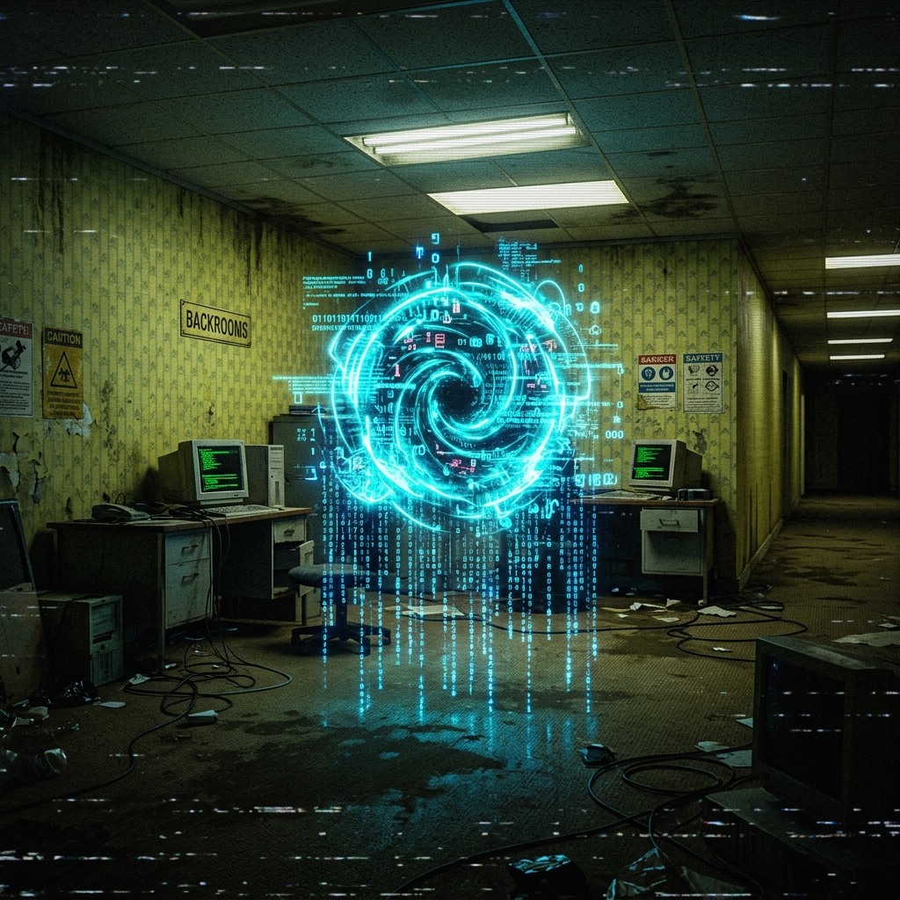

The iron lock snaps. The chains clatter to the floor. You push through the gate, stepping into a pocket dimension. The air is cold, blue, and clean in a way that feels almost illegal after the yellow rooms.
Humming servers line the walls, glowing with cyan status indicators. In the center, an armored terminal console blinks:
>> SECURE MAINFRAME ONLINE. WELCOME, FIXER LEGEND.
>> UMBRA SHIELDING ACTIVE.
>> WARNING: VOID PRESSURE DETECTED OUTSIDE GATE. DO NOT LEAVE OPEN.
The bunker does not solve the maze. It keeps the lights on long enough for the maze to become readable. Trust is a resource. Spend it like fire.
seal the nexus oathThis command bunker is maintained by Fixer Legend to secure resources and keep active channels open. Any Ethereum tribute deposited here supports the infrastructure and continues the hunt.
Deposit Ethereum tribute to the address below to keep the Legend Nexus online:
Do not send other chains. Tokens will be lost forever.